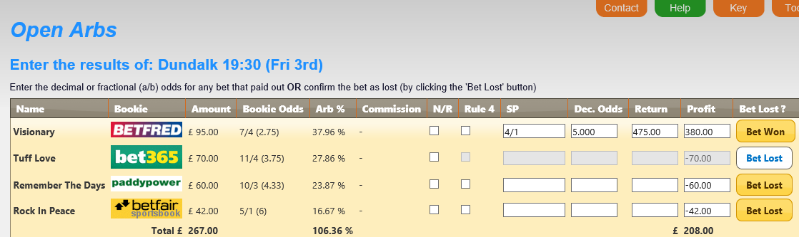
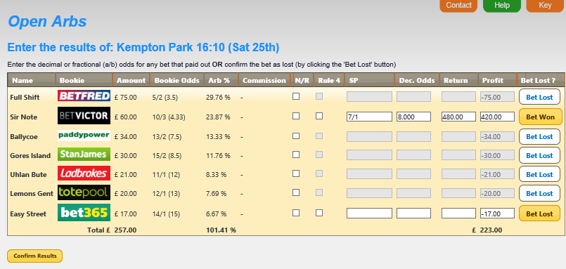
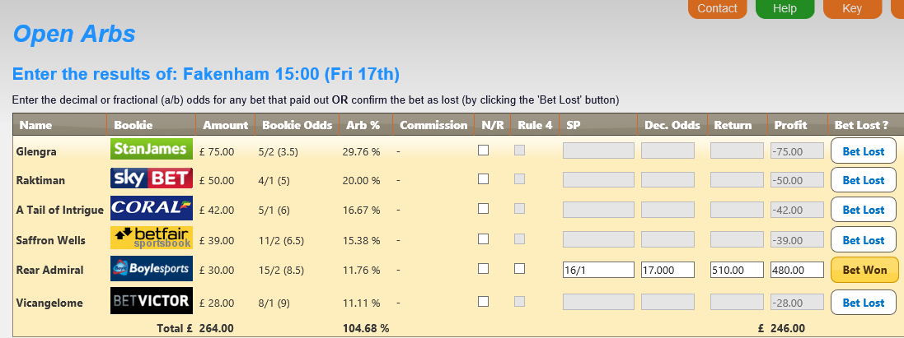
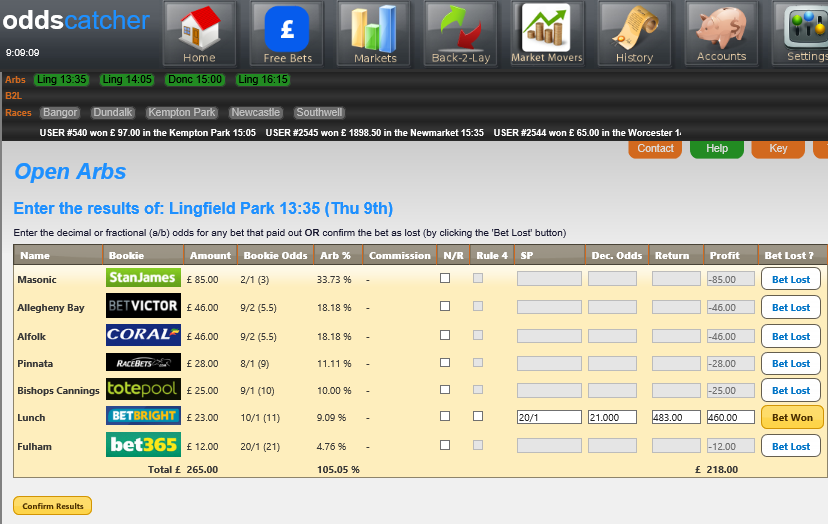

IMPORTANT ACCOUNCEMENT – 17/03/2020
Due to the news that British racing is now suspended until the end of April we have taken the decision to freeze all subscription payments with immediate effect.
With all that is going on at the moment the last thing you want to be worrying about is paying for services you cannot use.
No action is required by you. No further subscription payments will be taken until the racing resumes. If you have any questions about this, please do not hesitate to get in touch via the usual channels.
We will keep you up to date with plans as we move forward in these uncertain times. For now, though…please take care of yourselves, and those around you.
Could you use an extra £500…£1000…£2000 a month?
Of course you could. Who couldn’t? Using a few simple and PROVEN techniques you can lock-in returns time and time again...taking advantage of perfectly legitimate betting loopholes available to everybody. Every day.
Our software does all the hard work.
our experts provide the guidance… and the bookies provide the opportunity.
All YOU need to do is place the bets and collect your money.
OddsCatcher is your one-stop-shop betting solution. The only racing service you will ever need!
Our bespoke software suite makes everything simple…allowing everyday punters to access lucrative betting loopholes without the work, time and expense.
Market Movers: Bet alongside our in-house experts, providing you with daily selections that our dedicated team predict will shorten in price. So you can take the early price, then lay/trade at the shorter price the following day for a nice profit.
Arb Markets: Cash-in on a daily betting loopholes available every day. A simple method of strategically placing bets with particular ‘Best Odds Guaranteed‘ bookmakers in certain races. Allowing you to back every horse in the race for a profit.
Back To Lay: Our system will highlight multiple daily opportunities to Back a horse with a fixed odds bookmaker and Lay the same bet at a smaller price on the exchanges. Allowing you to lock-in a profit, whatever the outcome.
Bet365 Loophole: As a special free bonus…we’ll show you a simple method to turn a daily Bet365 offer into £500+ every month. In just five minutes a day, you can help yourself a series of bets that will cost nothing if they lose…and be worth hundreds of pounds if they win!
Account Management: Our software does the work so you don’t have to. You can set your own personal settings and manage ALL your bookmaker accounts from inside the Members Area. So you will only ever bet on the races you want to bet on and never stake more than you want to bet with. PLUS, all of your winnings across all of your bookmaker accounts will be automatically calculated and updated – so you will always be in absolute control of your betting. Whether you are betting every day… at weekends… or just when the mood takes you.
Just like traders on the stock exchange make money purely from the daily movement in prices, it is now possible to lock-in profits from horse racing without ever having to pick a winner! Even with all the expertise, statistics and experience in the world – making money from betting on horses is a tricky business. Anyone who tells you different is a liar or a fool.
The beauty of ‘exchange trading’ is we are simply cashing in on the movement of the odds.
Market Movers is a daily service highlighting horse(s) whose prices look certain to shorten before the off.
Simply by betting at the early BIGGER price means that when the odds DO shorten – you are in a position to LAY the same horse on the exchanges at the SHORTER price. Giving you a profit no matter what happens. Simple…but brilliantly effective!
No winners required. No form to study. No gambling involved.
Members get an email or text message (or both, whatever is most convenient) highlighting the selection(s) for the following days racing. Members are advised to BACK the selection(s), preferably with a Best Odds Guaranteed bookmaker (* read on to see the benefits). Then, members are advised to LAY the same selection(s) on Betfair the following morning – between 09.30 – 10:00 is recommended.
And that’s it. So long as the price shortens…YOU MAKE A PROFIT!
Let’s go through the possible scenarios with an example bet…
You get your evening email/ text message saying a horse named MARKET MOVER is running at Sandown at 2.40 tomorrow. It is currently priced at 6/1 but that price is expected to shorten by the time they go to post.
You decide on a stake you are comfortable with, say £10, and place the bet with a Best Odds Guaranteed bookmaker.
The next morning you see the price on MARKET MOVER has come in from 6/1 to 4/1. So you LAY the same horse for £10 at 4/1 on Betfair.
As it turns out, MARKET MOVER romps in by ten lengths. So you WIN £70 from BACKING the horse at 6/1 – £60 profit, plus your £10 stake back. But LOSE £40 from LAYING the horse at 4/1. Giving you an overall profit of £20 – your £60 BACK winnings, minus your £40 LAY losses.
BUT… even if MARKET MOVER fell at the first fence, the £10 stake you lost BACKING the horse would be covered by the £10 you won for LAYING the horse.*
(*Note: Always take into account the exchange’s commission charges, but these are marginal if your stakes are sensible.)
Of course, you have the option to tweak the amount you decide to LAY to build ‘Win Win’ profit scenarios. By ‘OVER LAYING‘ you can make a profit whether the selection wins or loses. Using the example above, let’s say you decided to LAY the horse for £12.50 at 4/1 (rather than £10). If MARKET MOVER WINS, you would collect the same £70 from BACKING the horse at 6/1 – £60 profit, plus your £10 stake back. And LOSE a slightly bigger £50 from LAYING the horse at 4/1. Giving you smaller overall profit of £10.
BUT, should MARKET MOVER be beaten, the £12.50 LAY covers your £10 stake you lost BACKING the horse and gives you a £2.50 profit. So whatever happens in the race, YOU are the winner.
The benefit of placing bets with Best Odds Guaranteed (BOG) bookmakers means, if after following Step One and Step Two for some reason the odds drift (i.e. get BIGGER) you can still make a profit. Because you know that bookmaker will pay out at the BIGGER price, you can still cover any potential losses.
Let’s go through it using the above example bet…
If we assume Step One and Step Two (above) are exactly the same. BUT, the next morning you find that the price hasn’t shortened – in fact, it has drifted to 8/1. Normally, this would give you a problem – if the horse WINS, you will collect the same £60 profit. But LAYING the horse at 8/1 you stand to LOSE £80, giving you an overall £20 loss. However, because the BOG bookie is committed to pay out at the bigger price – you will avoid this situation.
Thankfully these instances are very rare but using BOGs whenever possible is advised so you are never left high and dry. All our selections are provided by our in-house team of industry experts. Between them they have decades of racing experience and dozens of key contacts – some of whom are the high-net punters and racing owners actually responsible for moving prices. Genuine movers and shakers!
This unprecedented access to the industry makes us ideally placed to deliver a unique low risk, high reward betting system – direct to your inbox or mobile phone.
The wonderful world of Arbitrage Trading allows us to create multiple betting situations EVERY DAY that lock-in a profit for you. Simply by using a few clever strategies to take advantage of market movements
There has never been a better time to be a punter. It is such a swamped marketplace that bookmakers are falling over themselves to attract your business...leading to a glut of offers, enhanced odds and inducements to be snapped up – on a DAILY basis.
The method is the same for all our Arb Markets:
The OddsCatcher system highlights a race that fits the bill, then automatically splits stakes across all the runners to guarantee a pay-out.
All you have to do is place the bets and sit back to see how much you win.
By using ‘Best Odds Guaranteed’ bookies...any drift in the winner’s price will give a massive boost to your profits!
The screenshots below are just a few examples of winning arbs produced by OddsCatcher.
The system will highlight multiple opportunities like this every day. Using the same simple method each time you can cash-in as often as you want.
Friday 3rd March 2017
We backed every horse in the race (£267 split across four bookies). The winner - Visionary - had drifted out from 7/4 to 4/1...meaning Betfred paid at the bigger odds...giving a £208 profit on the race.
Saturday 25th Feb 2017
We backed every horse in the race (£257 split across seven bookies). The winner - Sir Note - had drifted out from 10/3 to 7/1...meaning Bet Victor paid at the bigger odds...giving a £223 profit on the race.
Friday 17th Feb 2017
We backed every horse in the race (£264 split across six bookies). The winner - Rear Admiral - had drifted out from 15/2 to 16/1...meaning Boylesports paid at the bigger odds...giving a £246 profit on the race.
Thursday 9th Feb 2017
We backed every horse in the race (£265 split across seven bookies). The winner - Lunch - had drifted out from 10/1 to 20/1...meaning Bet Bright paid at the bigger odds...giving a £218 profit on the race.
Our system takes out all effort – you can see from the example above that all the hard work has been done for you. It will find the best races, show you how to split your stakes, and even manage your betting account balances for you.
You can dip in and out when it suits you. Find some arbs during your lunch break, in the evenings or even just at weekends.
This is where you can back a horse (i.e. bet to win) with a fixed odds bookmaker, then LAY the same horse (i.e. bet to lose) at a SHORTER price on the betting exchanges.
This creates a ‘Back To Lay Arb’, where subtracting the lay losses from the back winnings leave you an overall profit.
HOW DOES IT WORK?
let’s say there is a horse called Bob’s Lad on offer at 5/1with William Hill. And the same horse is available to Lay at 4/1 with Betfair.
So, if we back Bob’s Lad for £50 at 5/1 with William Hill and also lay Bob’s Lad for £50 at 4/1 with Betfair, we can create the following scenario:
So whatever the outcome of the race…we either make a profit or break even!
And it only takes a slight tweak of your stakes to guarantee a profit from both outcomes…
Let’s say, we place the same £50 bet on Bob’s Lad to win at 5/1...but this time we lay the horse for £60 on Betfair (instead of £50).
A profit no matter who wins the race! You can’t ask for much better than that!
NOTE: for the ease of explanation Betfair commission is not considered in the examples above.
Our unique computer software highlights multiple Back-to-Lay opportunities every day. Doing all the work in the background so you don’t have to. All you have to do is click on to the Back-to-Lay page on the site to see all the day’s runners that are trading shorter on Betfair than with the bookmakers, including the meeting, the race time, the price difference...and highlight the Best Odds Guaranteed (BOG) bookies.
Back-to-Lay betting is also a clever way of staying one step ahead of the bookmakers.
An occupational hazard of being a regular winner is you will come to the attention of the bookmakers. Some members use Back-to-Lay bets to fool the bookies into thinking they are typical punters...to avoid any unwanted attention of possibility of having their accounts limited.
For example, if you’re placing a Back-to-Lay bet like the one outlined above and the horse loses (as in example 2)...although you have your losses covered by winning the lay part of the bet on Betfair...as far as William Hill (or whichever bookmaker you use) are concerned it is a £50 loss.
By losing with a bookmaker but winning the same amount from Betfair, you are simply transferring your bookmaker winnings into Betfair and keeping you under their radar and away from unwanted attention.
You can use our built-in calculator and work out exactly how much you need to stake on each part of the bet...taking into account the Betfair commission. This will help you tailor your stakes if you have a personal feeling about the race outcome.
Using BOG bookmakers is also a way to boost your profits! If the horse you back is with a BOG bookmaker and its price drifts out to a bigger price before the off...you will paid at the higher SP...and because you’ve already laid the same horse at lower odds, this can easily DOUBLE or even TRIPLE your profit!
It’s true. Leading bookmaker Bet365 offer a DAILY opportunity to secure EASY PROFIT. It takes no more than five minutes a day and simply requires you to place a maximum of two bets with Bet365 and two bets with Betfair.
When the bets win...you collect the winnings AND a free bet.
If the bets lose...your stakes are covered.
Allowing you to help yourself to around £250 - £500 every month... without risking a penny of your bank!
We have a clever piece of software that does all the work for you. All you need to do is login and place your bets.
And Bet365 are not the only ones. In fact, this is just the tip of the iceberg. The industry is so competitive that bookmakers are falling over themselves to attract your business...flooding the market with offers, incentives and inducements.
Ahead of EVERY major meeting there are enhanced odds offers, free bets, cash bonuses. ALL providing simple money-making opportunities…IF you know how to cash-in on them!
As part of your membership with us you will have full access to our bookmaker account management service.
This is a fully secure and data-protected facility that will allow you to manage all your bookmaking accounts from one screen.
It will track ALL your bets, record ALL your results, calculate ALL your winnings and automatically update ALL your balances in ALL your bookmaker accounts.
Giving you an at-a-glance guide to all your betting activity...past and present.
Just by taking a few minutes to fill in your account balances when you sign-up, you can monitor all your accounts from a single hub. The system will also display all ‘open’ bets...so you will always know exactly where your money is and how much you are winning.
*£ 30 / month
Top Class Racing Covered
Proven Profitable Service
Superfast customer service
*VAT charged at local rate
30 Days Guarantee
*£ 150 / Semi Annual
Really good value at just £25 / Month
Proven Profitable Service
Superfast customer service
Top class racing covered
*VAT charged at local rate
*£ 79 / Quarterly
Great value at £26.33/month
Proven Profitable Service
Superfast customer service
*VAT charged at local rate
30 Days Guarantee
For Product Support, please contact the vendor HERE.
For Order Support, please contact ClickBank HERE.
Click HERE to view our Terms & Conditions.
Click HERE to view our Privacy Policy.
ClickBank is the retailer of products on this site. CLICKBANK® is a registered trademark of Click Sales Inc., a Delaware corporation located at 1444 S. Entertainment Ave., Suite 410 Boise, ID 83709, USA and used by permission. ClickBank's role as retailer does not constitute an endorsement, approval or review of these products or any claim, statement or opinion used in promotion of these products. The thoughts and opinions expressed here are those of the seller(s) alone and do not necessarily reflect the views of Click Sales, Inc., its parents, subsidiaries or affiliates. The products, information, and other content provided by this seller are provided for informational purposes only. In the event of any problem with products that customers purchase through this seller, customers agree that their sole remedy is from the seller, if any, in accordance with any seller warranties and/or seller refund policy.